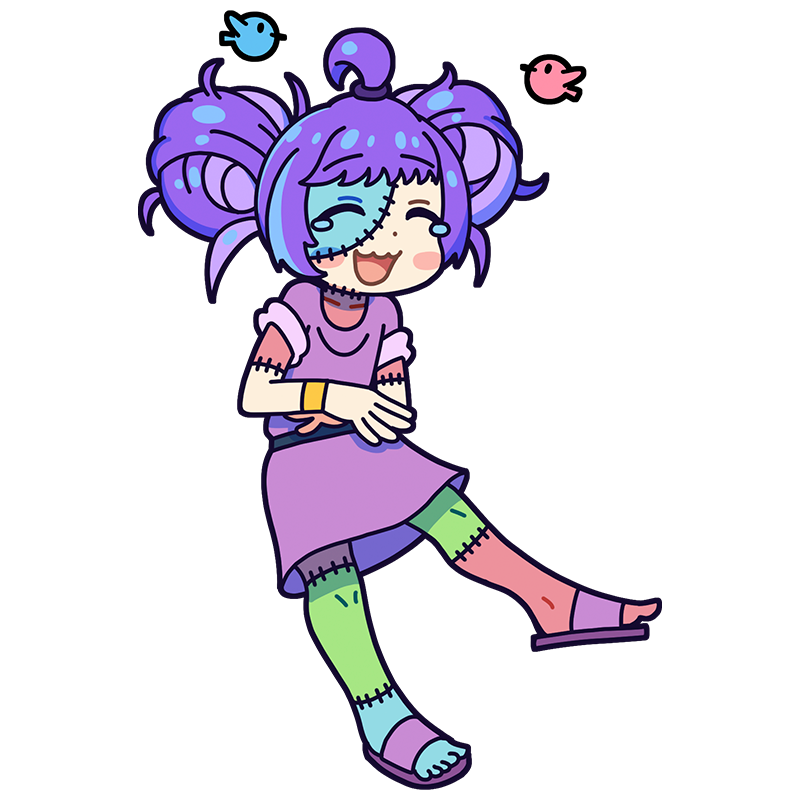

ぎゃーっはっはっはっ！ 愉快愉快！
美術の未来は明るいなぁーっ！
ゼウクシス
芸術は笑えてなんぼ！
笑顔あふれる伝説のミューズ
紀元前のギリシャで活動していた伝説のミューズ。美しい女神を目指して生み出された人造ミューズで、美女の身体をつぎはぎして作られた。しかし体のつなぎ方を間違えたせいか笑い上戸になってしまい、どんなにくだらないジョークでも笑い転げてしまう。
様式
？？？
出身国
ヘラクレイア・ルカニア(現イタリア)
代表作
- 現存作品なし
ゼウクシスといえばこの一枚！
クロトンの娘たちから
ヘレネーの肖像の
モデルを選ぶゼウクシス
ギリシャ神話に登場する美女・ヘレネーを描く依頼を受けたゼウクシスは、絶世の美女を描くため、まずは複数の娘をモデルに選び、それぞれの最も美しい部分を組み合わせて理想の女性像を作り上げたという。図版は18世紀フランスの画家ヴァンサンが描いたもので、彼の逸話は後世の作家たちによって描かれ、今日まで伝わっている。
制作年
1791年ごろ
技法・材質
油彩、キャンバス
寸法
101.5 cm x 137 cm
所蔵
スタンフォード大学カンターアートセンター
(アメリカ)
作品画像出典: https://commons.wikimedia.org/wiki/File:Fran%C3%A7ois-Andr%C3%A9_Vincent_-_Zeuxis_Choosing_his_Models_for_the_Image_of_Helen_from_among_the_Girls_of_Croton_-_WGA25109.jpg
ゼウクシスってどんな芸術家？
ヘラクレイアのゼウクシス
古代ギリシャに実在したとされる伝説の画家。作品はひとつも現存していないが、その卓越した画技は古代のさまざまな書籍で語り継がれている。特に写実表現に優れていたとされ、彼が描いたブドウを本物と間違えた鳥がついばみに来たという逸話も有名。晩年には老婆をモデルに女神を描いていたところ、その姿のあまりの滑稽さに笑いが止まらなくなり、ついには笑い死にしたと伝えられている。
フルネーム
Zeuxis of Heraclea
誕生
紀元前464年ごろ
死没
???(???歳没)